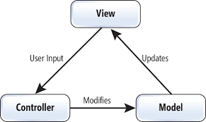
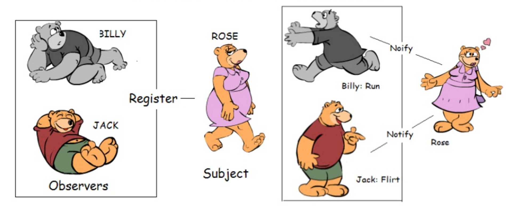

Websocket 4 Raspberry Pi
April 25th, 2018
By Didier BERNAUDEAU
Motivation
Websocket
Maintain bidirectional communications with server-side processes
- Introduce in HTML 5 by W3C
- HTTP protocol provides a special mechanism allowing an already established connection to upgrade to a new, incompatible, protocol.
- http://website.com => ws://website.com
- Websocket service: ws://echo.websocket.org
Go ahead !!!
Backend
- Python (Rpi.GPIO)
- Asynchronous programming (event loop, task, ...)
- Python framework
- asyncio with aiohttp
- gevent
- Crossbar
- Tornado
# Event websocket
class WebSocketHandler(tornado.websocket.WebSocketHandler):
def open(self):
self.write_message("You are connected")
def on_message(self, message):
self.write_message(message)
def on_close(self):
print("Client disconnected")
# Define route
application = tornado.web.Application([
(r'/ws', WebSocketHandler),
])
# Start loop
if __name__ == '__main__':
http_server = tornado.httpserver.HTTPServer(application)
http_server.listen(8888,address='0.0.0.0')
tornado.ioloop.IOLoop.instance().start()
but this is not so easy...
- Rpi.GPIO is not async !
- GPIO interrupt in a dedicated thread
- It can't send any message through websocket
Workaround:
callback from thread to the async io loop
Front End
Reactive web application
Software design pattern:
- Observer
- Flux
MVC pattern (traditional)
Observer pattern
Used by Angular with RxJS
Flux pattern

Used by React (Facebook) and Angular with NgRx Store